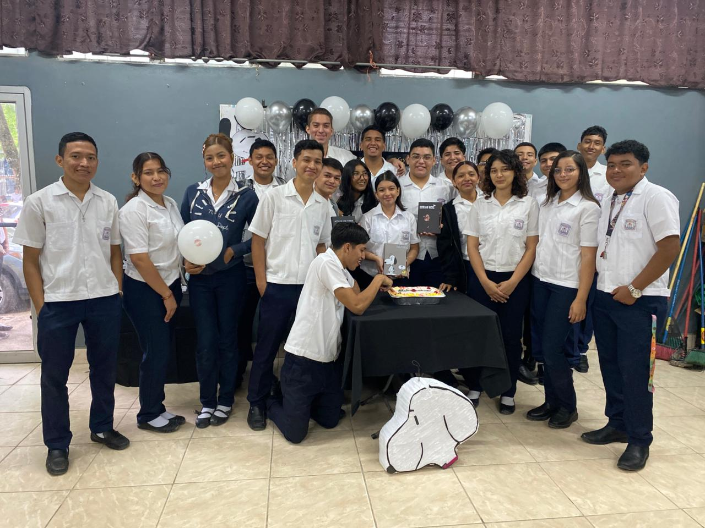

12vo BTPI
Somos la promoción de 12vo grado de BTPI, estudiantes técnicos capacitados en informática y cursos del INFOP. Como parte de nuestro TES, realizamos actividades de mantenimiento y aseo en las instalaciones de nuestro instituto, además de brindar soporte técnico preventivo a los equipos de estudiantes y docentes en diversos centros educativos. Combinamos nuestras materias técnicas con el desarrollo de catálogos web y diseño gráfico profesional para apoyar a la comunidad. Actualmente, nos mantenemos activos en diversas actividades académicas mientras nos preparamos con disciplina para nuestra próxima práctica profesional.
